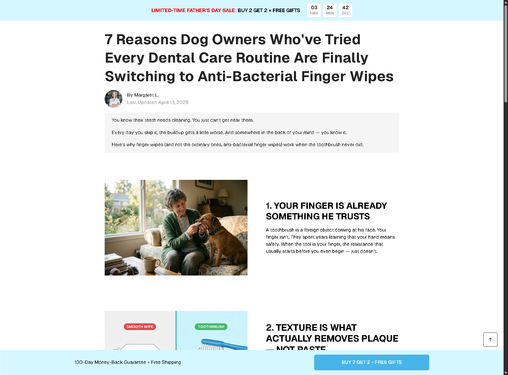
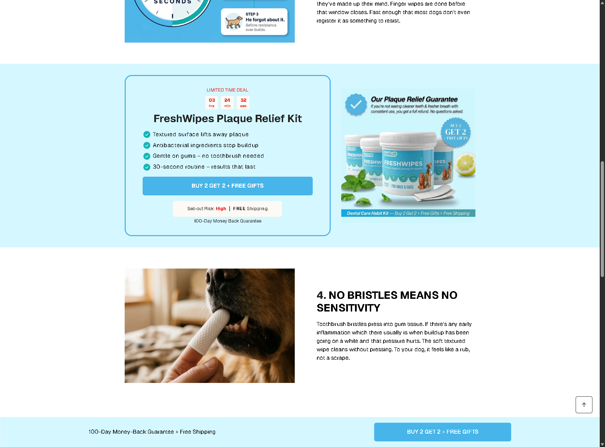
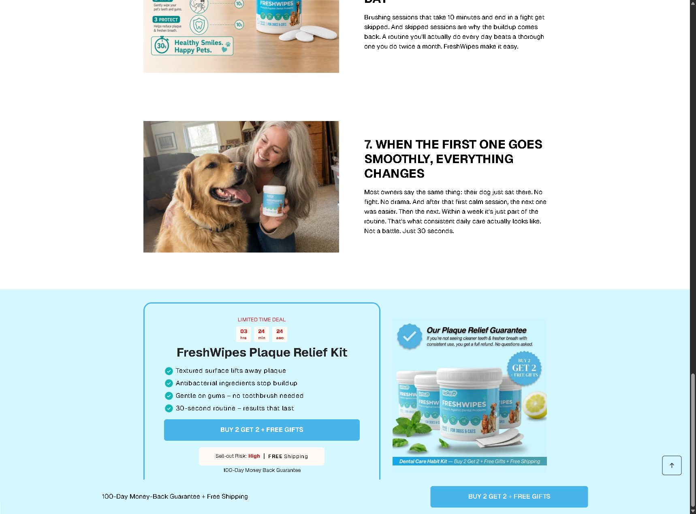
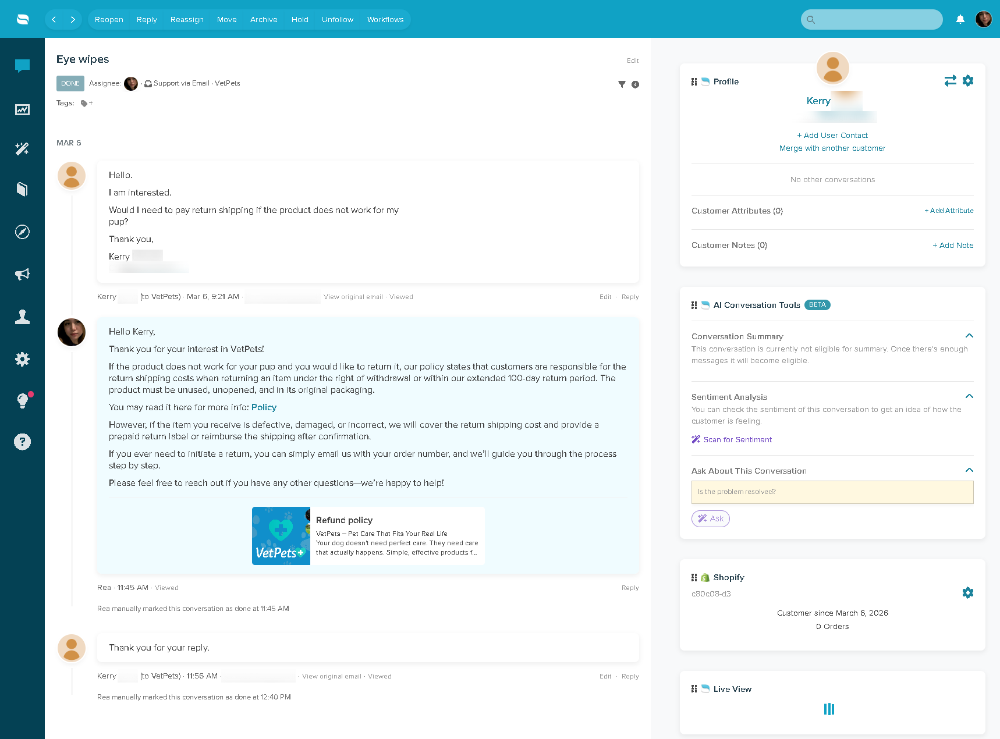

01 /
Shopify
Store updates, product and page work, theme and Liquid changes, cart and checkout-related investigation, and the everyday details that keep a storefront accurate and usable.
Rea Bernales · Shopify & E-Commerce Operations
For e-commerce teams that need someone who can understand the store, the customer, and the work in between.
I support the practical work that keeps an e-commerce business moving: Shopify operations, customer operations and order follow-through, optimization, systems, and coordination.

Practical support for the details that make a store work.
Shopify operations
Customer operations
Order & fulfillment
Optimization
Systems & coordination
I work best when there is a real problem to understand: an order that needs tracing, a Shopify detail that is not behaving as expected, a process with too many loose ends, or a customer who needs a clear answer.
That perspective comes from working across the customer-facing and operational sides of e-commerce. I do not treat a support question as an isolated ticket; I look at the order, store, fulfillment, and next steps needed to move it forward.
Curious about the why. Reliable about the follow-through.
Capabilities
A broad operational skill set, organised around the places where Shopify stores need steady attention and good judgment.
01 /
Store updates, product and page work, theme and Liquid changes, cart and checkout-related investigation, and the everyday details that keep a storefront accurate and usable.
02 /
Clear email support backed by investigation. I use Shopify order, fulfillment, and tracking information to understand what happened before replying—then coordinate the next step, escalate when needed, and follow through until there is a clear resolution.
03 /
Looking closely at the storefront and customer journey to spot friction, improve clarity, and turn what is observed into practical next steps.
04 /
Making recurring work easier to track and more consistent through sensible workflows, store tools, and automation—without losing sight of the people using them.
05 /
Keeping moving parts connected: fulfillment providers, customer follow-ups, creators, affiliates, content, and the operational handoffs that can otherwise get missed.
Selected work
A closer look at the kinds of work I handle. These are honest snapshots of responsibilities and approach—not invented case studies or metrics.

Shopify implementation + conversion-focused landing page
For VetPets’ FingerWipes, I built the listicle landing page at /pages/fingerwipes-listicle. The page uses long-form education and a clear sequence of reasons to make an unfamiliar dental-care routine easier to understand.
This was implementation and conversion-focused page work—not just a visual redesign. I built the responsive Shopify page in code, with the content hierarchy, visual sections, offer, guarantee, and calls to action working together.
The problem
It needed to help dog owners understand why FingerWipes are different from a toothbrush, answer likely hesitations, demonstrate the product’s role in a dental-care routine, and make the offer feel clear and low-risk.
What I built
I created the “7 reasons” structure, educational and product-explanation sections, objection-handling content, visual demonstration areas, offer and CTA sections, a guarantee/risk-reversal section, and a responsive Shopify implementation.
Performance
May 1 – Aug 26, 2026
This snapshot reports Shopify performance for the page’s traffic period. It does not claim a before-and-after uplift or attribute every sale solely to the page.
Visual proof


When a customer has an issue, I investigate what happened before responding. That can mean checking the Shopify order, fulfillment status, tracking, delivery information, or the relevant store process—then coordinating the next step and following up clearly.
Common workEmail-based support, order status questions, tracking and shipping issues, delayed or missing parcels, failed deliveries, wrong addresses, returns, refunds, and fulfillment problems.
ApproachCheck the context, communicate clearly, escalate when needed, and follow through until there is a clear resolution.

I bring a practical optimisation mindset to storefront work—reviewing page and checkout experiences, behaviour signals, and customer-facing details to identify where a store can be clearer, easier to use, or less likely to create avoidable friction.
FocusProduct pages, pre-landers, cart and checkout experience, and user behaviour.
ToolsMicrosoft Clarity, Triple Whale, Shopify, and testing tools.
I use systems, workflows, and automation to give recurring work more structure—supporting more consistent follow-ups, clearer handoffs, and fewer details getting lost when several parts of an e-commerce operation are moving at once.
FocusOperational workflows, follow-ups, and process improvement.
ToolsShopify Flow, Shopify apps, Google Workspace, Microsoft 365, and operational tools.
How I work
I am comfortable working independently, but I also know when an issue needs the right context, a clear update, or an escalation.
The approach
I check the relevant information, identify what is unresolved, and take the next useful action—not the quickest generic response. That includes investigating the operational context behind a customer issue, not treating it as an isolated ticket.
The follow-through
Whether the work is in Shopify, the support queue, or an operations workflow, I keep details organised, communicate clearly, and escalate when something needs attention.
Tools
Tools support the work. The value is knowing where to look, what to check, and how to move a task forward.
Shopify · Liquid · GemPages · Shopify Flow · Phoenix Checkout Builder
Re:amaze · Gorgias · Zendesk · Outlook · Loopia · Salesforce · Microsoft 365
Loop Subscriptions · AfterSell · Kaching Bundles · Triple Whale · Microsoft Clarity
Google Workspace · Microsoft 365 · Notion · Miro
Canva · CapCut · Meta Business Suite · Creator and affiliate workflows
Investigate · Organise · Coordinate · Improve · Follow through
I am open to full-time, long-term roles as well as freelance and contract work with Shopify, e-commerce, and customer operations teams.
Email Rea